Naive Bayes
Naive Bayes#
import pandas as pd
dataset=pd.read_csv('https://raw.githubusercontent.com/Sobariyah1001/dataset/main/dataR2.csv')
X = dataset[['Age', 'BMI', 'Glucose', 'Insulin', 'HOMA', 'Leptin', 'Adiponectin', 'Resistin', 'MCP.1']]
y = dataset['Classification']
X
| Age | BMI | Glucose | Insulin | HOMA | Leptin | Adiponectin | Resistin | MCP.1 | |
|---|---|---|---|---|---|---|---|---|---|
| 0 | 48 | 23.500000 | 70 | 2.707 | 0.467409 | 8.8071 | 9.702400 | 7.99585 | 417.114 |
| 1 | 83 | 20.690495 | 92 | 3.115 | 0.706897 | 8.8438 | 5.429285 | 4.06405 | 468.786 |
| 2 | 82 | 23.124670 | 91 | 4.498 | 1.009651 | 17.9393 | 22.432040 | 9.27715 | 554.697 |
| 3 | 68 | 21.367521 | 77 | 3.226 | 0.612725 | 9.8827 | 7.169560 | 12.76600 | 928.220 |
| 4 | 86 | 21.111111 | 92 | 3.549 | 0.805386 | 6.6994 | 4.819240 | 10.57635 | 773.920 |
| ... | ... | ... | ... | ... | ... | ... | ... | ... | ... |
| 111 | 45 | 26.850000 | 92 | 3.330 | 0.755688 | 54.6800 | 12.100000 | 10.96000 | 268.230 |
| 112 | 62 | 26.840000 | 100 | 4.530 | 1.117400 | 12.4500 | 21.420000 | 7.32000 | 330.160 |
| 113 | 65 | 32.050000 | 97 | 5.730 | 1.370998 | 61.4800 | 22.540000 | 10.33000 | 314.050 |
| 114 | 72 | 25.590000 | 82 | 2.820 | 0.570392 | 24.9600 | 33.750000 | 3.27000 | 392.460 |
| 115 | 86 | 27.180000 | 138 | 19.910 | 6.777364 | 90.2800 | 14.110000 | 4.35000 | 90.090 |
116 rows × 9 columns
y
0 1
1 1
2 1
3 1
4 1
..
111 2
112 2
113 2
114 2
115 2
Name: Classification, Length: 116, dtype: int64
from sklearn.model_selection import train_test_split
X_train, X_test, y_train, y_test = train_test_split(X,y, test_size=0.2, random_state=7)
from sklearn.naive_bayes import GaussianNB
gnb = GaussianNB().fit(X_train, y_train)
gnb.score(X_test, y_test)
0.5833333333333334
predict = gnb.predict([[70, 20.8, 110, 6.77, 1, 4.8, 17, 5.8, 289.334]])
print("Prediksi Classification :",predict)
Prediksi Classification : [1]
/usr/local/lib/python3.7/dist-packages/sklearn/base.py:451: UserWarning: X does not have valid feature names, but GaussianNB was fitted with feature names
"X does not have valid feature names, but"
#Decition Tree
import pandas as pd
import numpy as np
import matplotlib.pyplot as plt
import seaborn as sns
dataR2 = pd.read_csv('https://raw.githubusercontent.com/Sobariyah1001/dataset/main/dataR2.csv')
#Checking top 10 records of Dataset..
dataR2.head(10)
| Age | BMI | Glucose | Insulin | HOMA | Leptin | Adiponectin | Resistin | MCP.1 | Classification | |
|---|---|---|---|---|---|---|---|---|---|---|
| 0 | 48 | 23.500000 | 70 | 2.707 | 0.467409 | 8.8071 | 9.702400 | 7.99585 | 417.114 | 1 |
| 1 | 83 | 20.690495 | 92 | 3.115 | 0.706897 | 8.8438 | 5.429285 | 4.06405 | 468.786 | 1 |
| 2 | 82 | 23.124670 | 91 | 4.498 | 1.009651 | 17.9393 | 22.432040 | 9.27715 | 554.697 | 1 |
| 3 | 68 | 21.367521 | 77 | 3.226 | 0.612725 | 9.8827 | 7.169560 | 12.76600 | 928.220 | 1 |
| 4 | 86 | 21.111111 | 92 | 3.549 | 0.805386 | 6.6994 | 4.819240 | 10.57635 | 773.920 | 1 |
| 5 | 49 | 22.854458 | 92 | 3.226 | 0.732087 | 6.8317 | 13.679750 | 10.31760 | 530.410 | 1 |
| 6 | 89 | 22.700000 | 77 | 4.690 | 0.890787 | 6.9640 | 5.589865 | 12.93610 | 1256.083 | 1 |
| 7 | 76 | 23.800000 | 118 | 6.470 | 1.883201 | 4.3110 | 13.251320 | 5.10420 | 280.694 | 1 |
| 8 | 73 | 22.000000 | 97 | 3.350 | 0.801543 | 4.4700 | 10.358725 | 6.28445 | 136.855 | 1 |
| 9 | 75 | 23.000000 | 83 | 4.952 | 1.013839 | 17.1270 | 11.578990 | 7.09130 | 318.302 | 1 |
#Visualizing the dataset features to find pattern to solve our task
plt.scatter(dataR2['Age'],dataR2['BMI'])
plt.show()
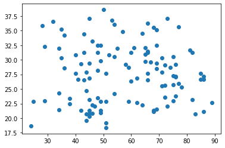
#Using Seaborn lib to visualized 2 features based on target variable.
sns.set_style('whitegrid')
sns.FacetGrid(dataR2, hue = 'Classification') \
.map(plt.scatter, 'Age','BMI') \
.add_legend()
plt.show()
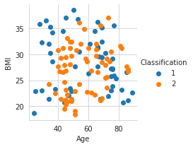
#Pair plot gives the relationship b/w all features distribution with each other..
sns.pairplot(dataR2.drop(['Age'],axis=1), hue='Classification')
plt.show()
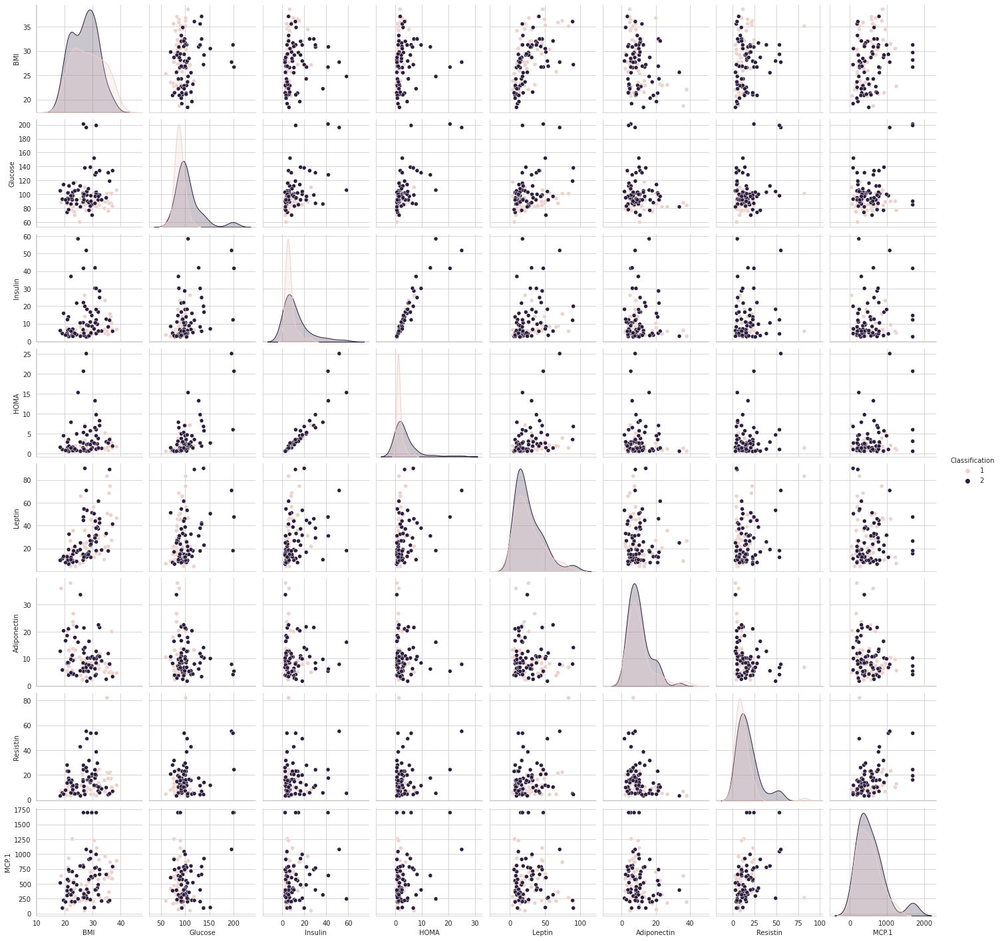
#Just trying to explore some new feature using the given data...
dataR2['Age_diff'] = dataR2['Age']-dataR2['BMI']
dataR2['Glucose_diff'] = dataR2['Glucose']-dataR2['Insulin']
dataR2
| Age | BMI | Glucose | Insulin | HOMA | Leptin | Adiponectin | Resistin | MCP.1 | Classification | Age_diff | Glucose_diff | |
|---|---|---|---|---|---|---|---|---|---|---|---|---|
| 0 | 48 | 23.500000 | 70 | 2.707 | 0.467409 | 8.8071 | 9.702400 | 7.99585 | 417.114 | 1 | 24.500000 | 67.293 |
| 1 | 83 | 20.690495 | 92 | 3.115 | 0.706897 | 8.8438 | 5.429285 | 4.06405 | 468.786 | 1 | 62.309505 | 88.885 |
| 2 | 82 | 23.124670 | 91 | 4.498 | 1.009651 | 17.9393 | 22.432040 | 9.27715 | 554.697 | 1 | 58.875330 | 86.502 |
| 3 | 68 | 21.367521 | 77 | 3.226 | 0.612725 | 9.8827 | 7.169560 | 12.76600 | 928.220 | 1 | 46.632479 | 73.774 |
| 4 | 86 | 21.111111 | 92 | 3.549 | 0.805386 | 6.6994 | 4.819240 | 10.57635 | 773.920 | 1 | 64.888889 | 88.451 |
| ... | ... | ... | ... | ... | ... | ... | ... | ... | ... | ... | ... | ... |
| 111 | 45 | 26.850000 | 92 | 3.330 | 0.755688 | 54.6800 | 12.100000 | 10.96000 | 268.230 | 2 | 18.150000 | 88.670 |
| 112 | 62 | 26.840000 | 100 | 4.530 | 1.117400 | 12.4500 | 21.420000 | 7.32000 | 330.160 | 2 | 35.160000 | 95.470 |
| 113 | 65 | 32.050000 | 97 | 5.730 | 1.370998 | 61.4800 | 22.540000 | 10.33000 | 314.050 | 2 | 32.950000 | 91.270 |
| 114 | 72 | 25.590000 | 82 | 2.820 | 0.570392 | 24.9600 | 33.750000 | 3.27000 | 392.460 | 2 | 46.410000 | 79.180 |
| 115 | 86 | 27.180000 | 138 | 19.910 | 6.777364 | 90.2800 | 14.110000 | 4.35000 | 90.090 | 2 | 58.820000 | 118.090 |
116 rows × 12 columns
#Analysed new feature to get some more infomation apart form existing ones...
sns.set_style('whitegrid')
sns.FacetGrid(dataR2,hue='Classification')\
.map(plt.scatter,'Glucose_diff','Age_diff')\
.add_legend()
plt.show()
sns.set_style('whitegrid')
sns.FacetGrid(dataR2,hue='Classification')\
.map(sns.distplot,'Age_diff')\
.add_legend()
plt.show()
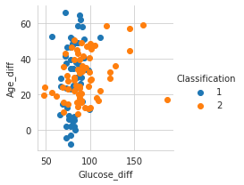

/usr/local/lib/python3.7/dist-packages/seaborn/distributions.py:2619: FutureWarning: `distplot` is a deprecated function and will be removed in a future version. Please adapt your code to use either `displot` (a figure-level function with similar flexibility) or `histplot` (an axes-level function for histograms).
warnings.warn(msg, FutureWarning)
/usr/local/lib/python3.7/dist-packages/seaborn/distributions.py:2619: FutureWarning: `distplot` is a deprecated function and will be removed in a future version. Please adapt your code to use either `displot` (a figure-level function with similar flexibility) or `histplot` (an axes-level function for histograms).
warnings.warn(msg, FutureWarning)
dataR2['Glucose_Age_len_diff'] = dataR2['Glucose']-dataR2['Age']
dataR2['Glucose_Age_width_diff'] = dataR2['Insulin']-dataR2['BMI']
dataR2
| Age | BMI | Glucose | Insulin | HOMA | Leptin | Adiponectin | Resistin | MCP.1 | Classification | Age_diff | Glucose_diff | Glucose_Age_len_diff | Glucose_Age_width_diff | |
|---|---|---|---|---|---|---|---|---|---|---|---|---|---|---|
| 0 | 48 | 23.500000 | 70 | 2.707 | 0.467409 | 8.8071 | 9.702400 | 7.99585 | 417.114 | 1 | 24.500000 | 67.293 | 22 | -20.793000 |
| 1 | 83 | 20.690495 | 92 | 3.115 | 0.706897 | 8.8438 | 5.429285 | 4.06405 | 468.786 | 1 | 62.309505 | 88.885 | 9 | -17.575495 |
| 2 | 82 | 23.124670 | 91 | 4.498 | 1.009651 | 17.9393 | 22.432040 | 9.27715 | 554.697 | 1 | 58.875330 | 86.502 | 9 | -18.626670 |
| 3 | 68 | 21.367521 | 77 | 3.226 | 0.612725 | 9.8827 | 7.169560 | 12.76600 | 928.220 | 1 | 46.632479 | 73.774 | 9 | -18.141521 |
| 4 | 86 | 21.111111 | 92 | 3.549 | 0.805386 | 6.6994 | 4.819240 | 10.57635 | 773.920 | 1 | 64.888889 | 88.451 | 6 | -17.562111 |
| ... | ... | ... | ... | ... | ... | ... | ... | ... | ... | ... | ... | ... | ... | ... |
| 111 | 45 | 26.850000 | 92 | 3.330 | 0.755688 | 54.6800 | 12.100000 | 10.96000 | 268.230 | 2 | 18.150000 | 88.670 | 47 | -23.520000 |
| 112 | 62 | 26.840000 | 100 | 4.530 | 1.117400 | 12.4500 | 21.420000 | 7.32000 | 330.160 | 2 | 35.160000 | 95.470 | 38 | -22.310000 |
| 113 | 65 | 32.050000 | 97 | 5.730 | 1.370998 | 61.4800 | 22.540000 | 10.33000 | 314.050 | 2 | 32.950000 | 91.270 | 32 | -26.320000 |
| 114 | 72 | 25.590000 | 82 | 2.820 | 0.570392 | 24.9600 | 33.750000 | 3.27000 | 392.460 | 2 | 46.410000 | 79.180 | 10 | -22.770000 |
| 115 | 86 | 27.180000 | 138 | 19.910 | 6.777364 | 90.2800 | 14.110000 | 4.35000 | 90.090 | 2 | 58.820000 | 118.090 | 52 | -7.270000 |
116 rows × 14 columns
sns.set_style('whitegrid')
sns.FacetGrid(dataR2,hue='Classification')\
.map(plt.scatter,'Glucose_Age_len_diff','Glucose_Age_width_diff')\
.add_legend()
plt.show()
sns.set_style('whitegrid')
sns.FacetGrid(dataR2,hue='Classification')\
.map(sns.distplot,'Age')\
.add_legend()
plt.show()
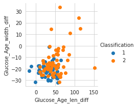
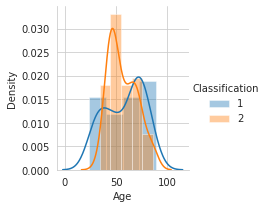
/usr/local/lib/python3.7/dist-packages/seaborn/distributions.py:2619: FutureWarning: `distplot` is a deprecated function and will be removed in a future version. Please adapt your code to use either `displot` (a figure-level function with similar flexibility) or `histplot` (an axes-level function for histograms).
warnings.warn(msg, FutureWarning)
/usr/local/lib/python3.7/dist-packages/seaborn/distributions.py:2619: FutureWarning: `distplot` is a deprecated function and will be removed in a future version. Please adapt your code to use either `displot` (a figure-level function with similar flexibility) or `histplot` (an axes-level function for histograms).
warnings.warn(msg, FutureWarning)
dataR2['Glucose_Age_len_wid_diff'] = dataR2['Glucose']-dataR2['BMI']
dataR2['Glucose_Age_wid_len_diff'] = dataR2['Insulin']-dataR2['Age']
dataR2
| Age | BMI | Glucose | Insulin | HOMA | Leptin | Adiponectin | Resistin | MCP.1 | Classification | Age_diff | Glucose_diff | Glucose_Age_len_diff | Glucose_Age_width_diff | Glucose_Age_len_wid_diff | Glucose_Age_wid_len_diff | |
|---|---|---|---|---|---|---|---|---|---|---|---|---|---|---|---|---|
| 0 | 48 | 23.500000 | 70 | 2.707 | 0.467409 | 8.8071 | 9.702400 | 7.99585 | 417.114 | 1 | 24.500000 | 67.293 | 22 | -20.793000 | 46.500000 | -45.293 |
| 1 | 83 | 20.690495 | 92 | 3.115 | 0.706897 | 8.8438 | 5.429285 | 4.06405 | 468.786 | 1 | 62.309505 | 88.885 | 9 | -17.575495 | 71.309505 | -79.885 |
| 2 | 82 | 23.124670 | 91 | 4.498 | 1.009651 | 17.9393 | 22.432040 | 9.27715 | 554.697 | 1 | 58.875330 | 86.502 | 9 | -18.626670 | 67.875330 | -77.502 |
| 3 | 68 | 21.367521 | 77 | 3.226 | 0.612725 | 9.8827 | 7.169560 | 12.76600 | 928.220 | 1 | 46.632479 | 73.774 | 9 | -18.141521 | 55.632479 | -64.774 |
| 4 | 86 | 21.111111 | 92 | 3.549 | 0.805386 | 6.6994 | 4.819240 | 10.57635 | 773.920 | 1 | 64.888889 | 88.451 | 6 | -17.562111 | 70.888889 | -82.451 |
| ... | ... | ... | ... | ... | ... | ... | ... | ... | ... | ... | ... | ... | ... | ... | ... | ... |
| 111 | 45 | 26.850000 | 92 | 3.330 | 0.755688 | 54.6800 | 12.100000 | 10.96000 | 268.230 | 2 | 18.150000 | 88.670 | 47 | -23.520000 | 65.150000 | -41.670 |
| 112 | 62 | 26.840000 | 100 | 4.530 | 1.117400 | 12.4500 | 21.420000 | 7.32000 | 330.160 | 2 | 35.160000 | 95.470 | 38 | -22.310000 | 73.160000 | -57.470 |
| 113 | 65 | 32.050000 | 97 | 5.730 | 1.370998 | 61.4800 | 22.540000 | 10.33000 | 314.050 | 2 | 32.950000 | 91.270 | 32 | -26.320000 | 64.950000 | -59.270 |
| 114 | 72 | 25.590000 | 82 | 2.820 | 0.570392 | 24.9600 | 33.750000 | 3.27000 | 392.460 | 2 | 46.410000 | 79.180 | 10 | -22.770000 | 56.410000 | -69.180 |
| 115 | 86 | 27.180000 | 138 | 19.910 | 6.777364 | 90.2800 | 14.110000 | 4.35000 | 90.090 | 2 | 58.820000 | 118.090 | 52 | -7.270000 | 110.820000 | -66.090 |
116 rows × 16 columns
sns.set_style('whitegrid')
sns.FacetGrid(dataR2,hue='Classification')\
.map(plt.scatter,'Glucose_Age_wid_len_diff','Glucose_Age_len_wid_diff')\
.add_legend()
plt.show()
sns.set_style('whitegrid')
sns.FacetGrid(dataR2,hue='Classification')\
.map(sns.distplot,'Glucose_Age_wid_len_diff')\
.add_legend()
plt.show()
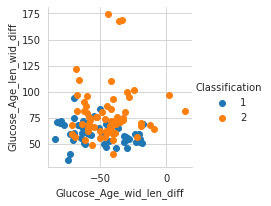
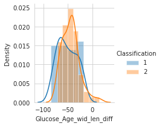
/usr/local/lib/python3.7/dist-packages/seaborn/distributions.py:2619: FutureWarning: `distplot` is a deprecated function and will be removed in a future version. Please adapt your code to use either `displot` (a figure-level function with similar flexibility) or `histplot` (an axes-level function for histograms).
warnings.warn(msg, FutureWarning)
/usr/local/lib/python3.7/dist-packages/seaborn/distributions.py:2619: FutureWarning: `distplot` is a deprecated function and will be removed in a future version. Please adapt your code to use either `displot` (a figure-level function with similar flexibility) or `histplot` (an axes-level function for histograms).
warnings.warn(msg, FutureWarning)
# Finding relationship b/w new feature based on class labels...
sns.pairplot(dataR2[['Classification', 'Glucose_diff', 'Age_diff', 'Glucose_Age_len_diff',\
'Glucose_Age_width_diff', 'Glucose_Age_len_wid_diff',\
'Glucose_Age_wid_len_diff']], hue='Classification')
plt.show()
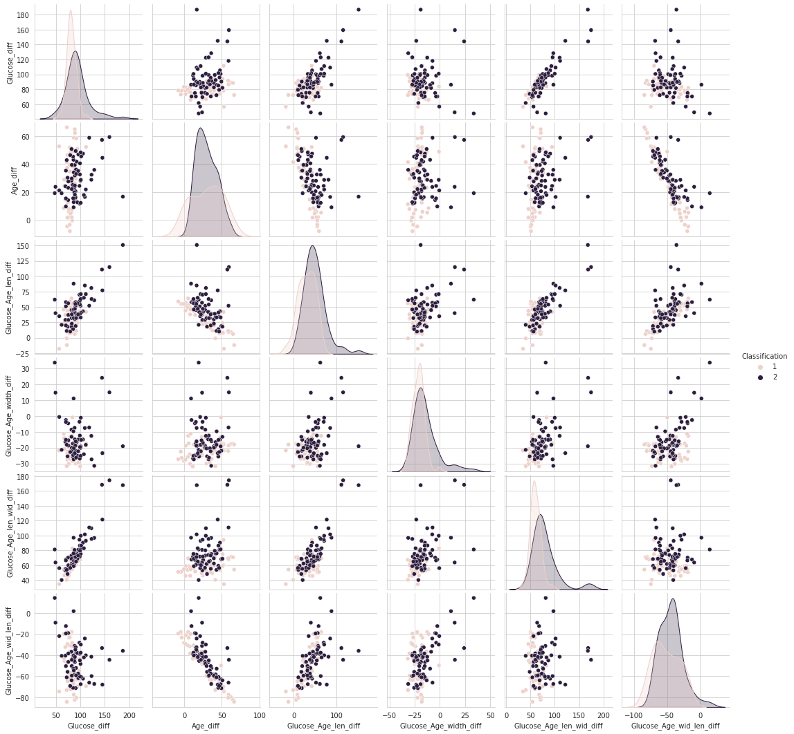
#Droping Id column as it is of no use in classifing the class labels..
# dataR2.drop(['Age'],axis=1,inplace=True)
#exploring distribution plot for all features
for i in dataR2.columns:
if i == 'Species':
continue
sns.set_style('whitegrid')
sns.FacetGrid(dataR2,hue='Classification')\
.map(sns.distplot,i)\
.add_legend()
plt.show()
/usr/local/lib/python3.7/dist-packages/seaborn/distributions.py:2619: FutureWarning: `distplot` is a deprecated function and will be removed in a future version. Please adapt your code to use either `displot` (a figure-level function with similar flexibility) or `histplot` (an axes-level function for histograms).
warnings.warn(msg, FutureWarning)
/usr/local/lib/python3.7/dist-packages/seaborn/distributions.py:2619: FutureWarning: `distplot` is a deprecated function and will be removed in a future version. Please adapt your code to use either `displot` (a figure-level function with similar flexibility) or `histplot` (an axes-level function for histograms).
warnings.warn(msg, FutureWarning)

/usr/local/lib/python3.7/dist-packages/seaborn/distributions.py:2619: FutureWarning: `distplot` is a deprecated function and will be removed in a future version. Please adapt your code to use either `displot` (a figure-level function with similar flexibility) or `histplot` (an axes-level function for histograms).
warnings.warn(msg, FutureWarning)
/usr/local/lib/python3.7/dist-packages/seaborn/distributions.py:2619: FutureWarning: `distplot` is a deprecated function and will be removed in a future version. Please adapt your code to use either `displot` (a figure-level function with similar flexibility) or `histplot` (an axes-level function for histograms).
warnings.warn(msg, FutureWarning)

/usr/local/lib/python3.7/dist-packages/seaborn/distributions.py:2619: FutureWarning: `distplot` is a deprecated function and will be removed in a future version. Please adapt your code to use either `displot` (a figure-level function with similar flexibility) or `histplot` (an axes-level function for histograms).
warnings.warn(msg, FutureWarning)
/usr/local/lib/python3.7/dist-packages/seaborn/distributions.py:2619: FutureWarning: `distplot` is a deprecated function and will be removed in a future version. Please adapt your code to use either `displot` (a figure-level function with similar flexibility) or `histplot` (an axes-level function for histograms).
warnings.warn(msg, FutureWarning)
/usr/local/lib/python3.7/dist-packages/seaborn/distributions.py:2619: FutureWarning: `distplot` is a deprecated function and will be removed in a future version. Please adapt your code to use either `displot` (a figure-level function with similar flexibility) or `histplot` (an axes-level function for histograms).
warnings.warn(msg, FutureWarning)
/usr/local/lib/python3.7/dist-packages/seaborn/distributions.py:2619: FutureWarning: `distplot` is a deprecated function and will be removed in a future version. Please adapt your code to use either `displot` (a figure-level function with similar flexibility) or `histplot` (an axes-level function for histograms).
warnings.warn(msg, FutureWarning)
/usr/local/lib/python3.7/dist-packages/seaborn/distributions.py:2619: FutureWarning: `distplot` is a deprecated function and will be removed in a future version. Please adapt your code to use either `displot` (a figure-level function with similar flexibility) or `histplot` (an axes-level function for histograms).
warnings.warn(msg, FutureWarning)
/usr/local/lib/python3.7/dist-packages/seaborn/distributions.py:2619: FutureWarning: `distplot` is a deprecated function and will be removed in a future version. Please adapt your code to use either `displot` (a figure-level function with similar flexibility) or `histplot` (an axes-level function for histograms).
warnings.warn(msg, FutureWarning)
/usr/local/lib/python3.7/dist-packages/seaborn/distributions.py:2619: FutureWarning: `distplot` is a deprecated function and will be removed in a future version. Please adapt your code to use either `displot` (a figure-level function with similar flexibility) or `histplot` (an axes-level function for histograms).
warnings.warn(msg, FutureWarning)
/usr/local/lib/python3.7/dist-packages/seaborn/distributions.py:2619: FutureWarning: `distplot` is a deprecated function and will be removed in a future version. Please adapt your code to use either `displot` (a figure-level function with similar flexibility) or `histplot` (an axes-level function for histograms).
warnings.warn(msg, FutureWarning)
/usr/local/lib/python3.7/dist-packages/seaborn/distributions.py:2619: FutureWarning: `distplot` is a deprecated function and will be removed in a future version. Please adapt your code to use either `displot` (a figure-level function with similar flexibility) or `histplot` (an axes-level function for histograms).
warnings.warn(msg, FutureWarning)
/usr/local/lib/python3.7/dist-packages/seaborn/distributions.py:2619: FutureWarning: `distplot` is a deprecated function and will be removed in a future version. Please adapt your code to use either `displot` (a figure-level function with similar flexibility) or `histplot` (an axes-level function for histograms).
warnings.warn(msg, FutureWarning)
/usr/local/lib/python3.7/dist-packages/seaborn/distributions.py:2619: FutureWarning: `distplot` is a deprecated function and will be removed in a future version. Please adapt your code to use either `displot` (a figure-level function with similar flexibility) or `histplot` (an axes-level function for histograms).
warnings.warn(msg, FutureWarning)
/usr/local/lib/python3.7/dist-packages/seaborn/distributions.py:2619: FutureWarning: `distplot` is a deprecated function and will be removed in a future version. Please adapt your code to use either `displot` (a figure-level function with similar flexibility) or `histplot` (an axes-level function for histograms).
warnings.warn(msg, FutureWarning)
/usr/local/lib/python3.7/dist-packages/seaborn/distributions.py:2619: FutureWarning: `distplot` is a deprecated function and will be removed in a future version. Please adapt your code to use either `displot` (a figure-level function with similar flexibility) or `histplot` (an axes-level function for histograms).
warnings.warn(msg, FutureWarning)
/usr/local/lib/python3.7/dist-packages/seaborn/distributions.py:2619: FutureWarning: `distplot` is a deprecated function and will be removed in a future version. Please adapt your code to use either `displot` (a figure-level function with similar flexibility) or `histplot` (an axes-level function for histograms).
warnings.warn(msg, FutureWarning)
/usr/local/lib/python3.7/dist-packages/seaborn/distributions.py:2619: FutureWarning: `distplot` is a deprecated function and will be removed in a future version. Please adapt your code to use either `displot` (a figure-level function with similar flexibility) or `histplot` (an axes-level function for histograms).
warnings.warn(msg, FutureWarning)
/usr/local/lib/python3.7/dist-packages/seaborn/distributions.py:316: UserWarning: Dataset has 0 variance; skipping density estimate. Pass `warn_singular=False` to disable this warning.
warnings.warn(msg, UserWarning)
/usr/local/lib/python3.7/dist-packages/seaborn/distributions.py:2619: FutureWarning: `distplot` is a deprecated function and will be removed in a future version. Please adapt your code to use either `displot` (a figure-level function with similar flexibility) or `histplot` (an axes-level function for histograms).
warnings.warn(msg, FutureWarning)
/usr/local/lib/python3.7/dist-packages/seaborn/distributions.py:316: UserWarning: Dataset has 0 variance; skipping density estimate. Pass `warn_singular=False` to disable this warning.
warnings.warn(msg, UserWarning)
/usr/local/lib/python3.7/dist-packages/seaborn/distributions.py:2619: FutureWarning: `distplot` is a deprecated function and will be removed in a future version. Please adapt your code to use either `displot` (a figure-level function with similar flexibility) or `histplot` (an axes-level function for histograms).
warnings.warn(msg, FutureWarning)
/usr/local/lib/python3.7/dist-packages/seaborn/distributions.py:2619: FutureWarning: `distplot` is a deprecated function and will be removed in a future version. Please adapt your code to use either `displot` (a figure-level function with similar flexibility) or `histplot` (an axes-level function for histograms).
warnings.warn(msg, FutureWarning)
/usr/local/lib/python3.7/dist-packages/seaborn/distributions.py:2619: FutureWarning: `distplot` is a deprecated function and will be removed in a future version. Please adapt your code to use either `displot` (a figure-level function with similar flexibility) or `histplot` (an axes-level function for histograms).
warnings.warn(msg, FutureWarning)
/usr/local/lib/python3.7/dist-packages/seaborn/distributions.py:2619: FutureWarning: `distplot` is a deprecated function and will be removed in a future version. Please adapt your code to use either `displot` (a figure-level function with similar flexibility) or `histplot` (an axes-level function for histograms).
warnings.warn(msg, FutureWarning)
/usr/local/lib/python3.7/dist-packages/seaborn/distributions.py:2619: FutureWarning: `distplot` is a deprecated function and will be removed in a future version. Please adapt your code to use either `displot` (a figure-level function with similar flexibility) or `histplot` (an axes-level function for histograms).
warnings.warn(msg, FutureWarning)
/usr/local/lib/python3.7/dist-packages/seaborn/distributions.py:2619: FutureWarning: `distplot` is a deprecated function and will be removed in a future version. Please adapt your code to use either `displot` (a figure-level function with similar flexibility) or `histplot` (an axes-level function for histograms).
warnings.warn(msg, FutureWarning)
/usr/local/lib/python3.7/dist-packages/seaborn/distributions.py:2619: FutureWarning: `distplot` is a deprecated function and will be removed in a future version. Please adapt your code to use either `displot` (a figure-level function with similar flexibility) or `histplot` (an axes-level function for histograms).
warnings.warn(msg, FutureWarning)
/usr/local/lib/python3.7/dist-packages/seaborn/distributions.py:2619: FutureWarning: `distplot` is a deprecated function and will be removed in a future version. Please adapt your code to use either `displot` (a figure-level function with similar flexibility) or `histplot` (an axes-level function for histograms).
warnings.warn(msg, FutureWarning)
/usr/local/lib/python3.7/dist-packages/seaborn/distributions.py:2619: FutureWarning: `distplot` is a deprecated function and will be removed in a future version. Please adapt your code to use either `displot` (a figure-level function with similar flexibility) or `histplot` (an axes-level function for histograms).
warnings.warn(msg, FutureWarning)
/usr/local/lib/python3.7/dist-packages/seaborn/distributions.py:2619: FutureWarning: `distplot` is a deprecated function and will be removed in a future version. Please adapt your code to use either `displot` (a figure-level function with similar flexibility) or `histplot` (an axes-level function for histograms).
warnings.warn(msg, FutureWarning)
/usr/local/lib/python3.7/dist-packages/seaborn/distributions.py:2619: FutureWarning: `distplot` is a deprecated function and will be removed in a future version. Please adapt your code to use either `displot` (a figure-level function with similar flexibility) or `histplot` (an axes-level function for histograms).
warnings.warn(msg, FutureWarning)
/usr/local/lib/python3.7/dist-packages/seaborn/distributions.py:2619: FutureWarning: `distplot` is a deprecated function and will be removed in a future version. Please adapt your code to use either `displot` (a figure-level function with similar flexibility) or `histplot` (an axes-level function for histograms).
warnings.warn(msg, FutureWarning)

dataR2
| Age | BMI | Glucose | Insulin | HOMA | Leptin | Adiponectin | Resistin | MCP.1 | Classification | Age_diff | Glucose_diff | Glucose_Age_len_diff | Glucose_Age_width_diff | Glucose_Age_len_wid_diff | Glucose_Age_wid_len_diff | |
|---|---|---|---|---|---|---|---|---|---|---|---|---|---|---|---|---|
| 0 | 48 | 23.500000 | 70 | 2.707 | 0.467409 | 8.8071 | 9.702400 | 7.99585 | 417.114 | 1 | 24.500000 | 67.293 | 22 | -20.793000 | 46.500000 | -45.293 |
| 1 | 83 | 20.690495 | 92 | 3.115 | 0.706897 | 8.8438 | 5.429285 | 4.06405 | 468.786 | 1 | 62.309505 | 88.885 | 9 | -17.575495 | 71.309505 | -79.885 |
| 2 | 82 | 23.124670 | 91 | 4.498 | 1.009651 | 17.9393 | 22.432040 | 9.27715 | 554.697 | 1 | 58.875330 | 86.502 | 9 | -18.626670 | 67.875330 | -77.502 |
| 3 | 68 | 21.367521 | 77 | 3.226 | 0.612725 | 9.8827 | 7.169560 | 12.76600 | 928.220 | 1 | 46.632479 | 73.774 | 9 | -18.141521 | 55.632479 | -64.774 |
| 4 | 86 | 21.111111 | 92 | 3.549 | 0.805386 | 6.6994 | 4.819240 | 10.57635 | 773.920 | 1 | 64.888889 | 88.451 | 6 | -17.562111 | 70.888889 | -82.451 |
| ... | ... | ... | ... | ... | ... | ... | ... | ... | ... | ... | ... | ... | ... | ... | ... | ... |
| 111 | 45 | 26.850000 | 92 | 3.330 | 0.755688 | 54.6800 | 12.100000 | 10.96000 | 268.230 | 2 | 18.150000 | 88.670 | 47 | -23.520000 | 65.150000 | -41.670 |
| 112 | 62 | 26.840000 | 100 | 4.530 | 1.117400 | 12.4500 | 21.420000 | 7.32000 | 330.160 | 2 | 35.160000 | 95.470 | 38 | -22.310000 | 73.160000 | -57.470 |
| 113 | 65 | 32.050000 | 97 | 5.730 | 1.370998 | 61.4800 | 22.540000 | 10.33000 | 314.050 | 2 | 32.950000 | 91.270 | 32 | -26.320000 | 64.950000 | -59.270 |
| 114 | 72 | 25.590000 | 82 | 2.820 | 0.570392 | 24.9600 | 33.750000 | 3.27000 | 392.460 | 2 | 46.410000 | 79.180 | 10 | -22.770000 | 56.410000 | -69.180 |
| 115 | 86 | 27.180000 | 138 | 19.910 | 6.777364 | 90.2800 | 14.110000 | 4.35000 | 90.090 | 2 | 58.820000 | 118.090 | 52 | -7.270000 | 110.820000 | -66.090 |
116 rows × 16 columns
#Now try to create a model to solve our task
#As per our analysis, we can't find much information from new feature which can helpful in solving our problem...
#For solving our task I have selected few features amongs all to build up our best model..
'''Imporing few library for create Decision tree classifier and visualizing the tree structure'''
from sklearn import tree
import graphviz
from sklearn.tree import DecisionTreeClassifier
from sklearn.model_selection import train_test_split, cross_val_score
'''Here we separating independent varibles or target varibles from Iris dataset'''
X = dataR2[['Glucose', 'Insulin','Age', 'BMI','Glucose_Age_wid_len_diff','Glucose_Age_width_diff']]
y = dataR2['Classification']
#Before training the model we have split our data into Actual Train and Actual Test Dataset for training and validating purpose...
Xtrain, Xtest, Ytrain, Ytest = train_test_split(X, y, test_size=0.30, random_state=42)
#spliting data into validation train and validation test
Xt, Xcv, Yt, Ycv = train_test_split(Xtrain, Ytrain, test_size=0.10, random_state=42)
'''Now we have create a Decision tree classifier and trained it with training dataset.'''
data_clf = DecisionTreeClassifier(criterion='gini',min_samples_split=2)
data_clf.fit(Xt, Yt)
#Visualized the Tree which is formed on train dataset
tree.plot_tree(data_clf)
[Text(0.3625, 0.9375, 'X[0] <= 94.5\ngini = 0.481\nsamples = 72\nvalue = [29, 43]'),
Text(0.1, 0.8125, 'X[4] <= -61.116\ngini = 0.467\nsamples = 35\nvalue = [22, 13]'),
Text(0.05, 0.6875, 'gini = 0.0\nsamples = 8\nvalue = [8, 0]'),
Text(0.15, 0.6875, 'X[2] <= 44.0\ngini = 0.499\nsamples = 27\nvalue = [14, 13]'),
Text(0.1, 0.5625, 'gini = 0.0\nsamples = 8\nvalue = [8, 0]'),
Text(0.2, 0.5625, 'X[1] <= 3.278\ngini = 0.432\nsamples = 19\nvalue = [6, 13]'),
Text(0.15, 0.4375, 'gini = 0.0\nsamples = 2\nvalue = [2, 0]'),
Text(0.25, 0.4375, 'X[3] <= 27.269\ngini = 0.36\nsamples = 17\nvalue = [4, 13]'),
Text(0.2, 0.3125, 'gini = 0.0\nsamples = 7\nvalue = [0, 7]'),
Text(0.3, 0.3125, 'X[4] <= -43.875\ngini = 0.48\nsamples = 10\nvalue = [4, 6]'),
Text(0.2, 0.1875, 'X[4] <= -59.674\ngini = 0.375\nsamples = 4\nvalue = [3, 1]'),
Text(0.15, 0.0625, 'gini = 0.0\nsamples = 1\nvalue = [0, 1]'),
Text(0.25, 0.0625, 'gini = 0.0\nsamples = 3\nvalue = [3, 0]'),
Text(0.4, 0.1875, 'X[5] <= -28.853\ngini = 0.278\nsamples = 6\nvalue = [1, 5]'),
Text(0.35, 0.0625, 'gini = 0.0\nsamples = 1\nvalue = [1, 0]'),
Text(0.45, 0.0625, 'gini = 0.0\nsamples = 5\nvalue = [0, 5]'),
Text(0.625, 0.8125, 'X[4] <= -68.555\ngini = 0.307\nsamples = 37\nvalue = [7, 30]'),
Text(0.5, 0.6875, 'X[1] <= 8.069\ngini = 0.375\nsamples = 4\nvalue = [3, 1]'),
Text(0.45, 0.5625, 'gini = 0.0\nsamples = 3\nvalue = [3, 0]'),
Text(0.55, 0.5625, 'gini = 0.0\nsamples = 1\nvalue = [0, 1]'),
Text(0.75, 0.6875, 'X[5] <= -20.818\ngini = 0.213\nsamples = 33\nvalue = [4, 29]'),
Text(0.65, 0.5625, 'X[5] <= -22.125\ngini = 0.444\nsamples = 9\nvalue = [3, 6]'),
Text(0.6, 0.4375, 'X[5] <= -28.428\ngini = 0.245\nsamples = 7\nvalue = [1, 6]'),
Text(0.55, 0.3125, 'X[3] <= 36.101\ngini = 0.5\nsamples = 2\nvalue = [1, 1]'),
Text(0.5, 0.1875, 'gini = 0.0\nsamples = 1\nvalue = [1, 0]'),
Text(0.6, 0.1875, 'gini = 0.0\nsamples = 1\nvalue = [0, 1]'),
Text(0.65, 0.3125, 'gini = 0.0\nsamples = 5\nvalue = [0, 5]'),
Text(0.7, 0.4375, 'gini = 0.0\nsamples = 2\nvalue = [2, 0]'),
Text(0.85, 0.5625, 'X[5] <= -2.337\ngini = 0.08\nsamples = 24\nvalue = [1, 23]'),
Text(0.8, 0.4375, 'gini = 0.0\nsamples = 19\nvalue = [0, 19]'),
Text(0.9, 0.4375, 'X[4] <= -47.089\ngini = 0.32\nsamples = 5\nvalue = [1, 4]'),
Text(0.85, 0.3125, 'gini = 0.0\nsamples = 1\nvalue = [1, 0]'),
Text(0.95, 0.3125, 'gini = 0.0\nsamples = 4\nvalue = [0, 4]')]
#Visualizing Decision Tree using graphviz library
dot_data = tree.export_graphviz(data_clf, out_file=None)
graph = graphviz.Source(dot_data)
graph
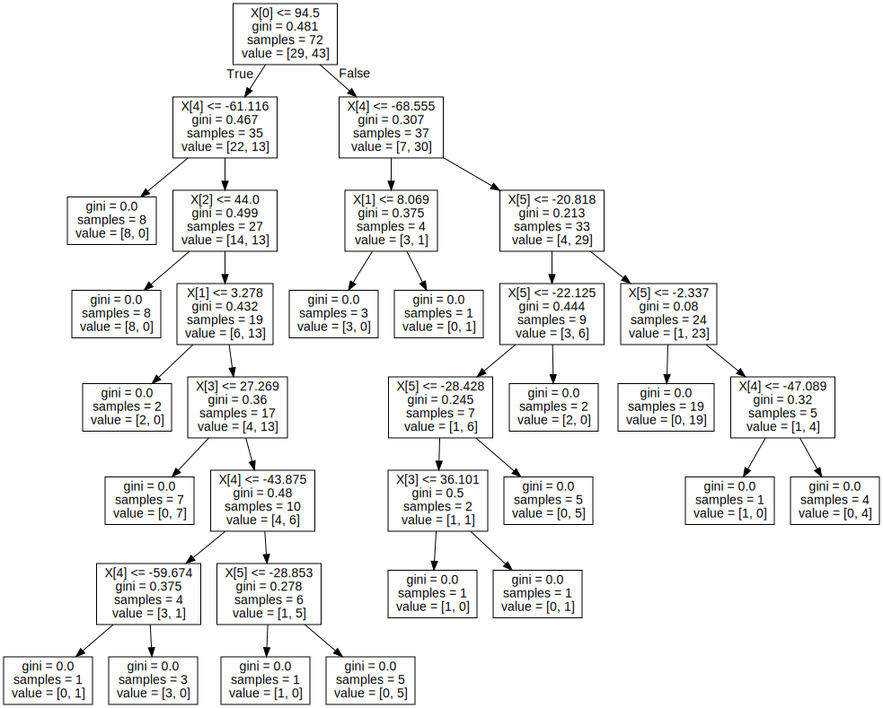
# As our model has been trained....
#Now we can validate our Decision tree using cross validation method to get the accuracy or performance score of our model.
print('Accuracy score is:',cross_val_score(data_clf, Xt, Yt, cv=3, scoring='accuracy').mean())
Accuracy score is: 0.6111111111111112
#Checking validation test data on our trained model and getting performance metrices
from sklearn.metrics import multilabel_confusion_matrix, accuracy_score
Y_hat = data_clf.predict(Xcv)
print('Accuracy score for validation test data is:',accuracy_score(Ycv, Y_hat))
multilabel_confusion_matrix(Ycv , Y_hat)
Accuracy score for validation test data is: 0.7777777777777778
array([[[2, 1],
[1, 5]],
[[5, 1],
[1, 2]]])
#Checking our model performance on actual unseen test data..
YT_hat = data_clf.predict(Xtest)
YT_hat
print('Model Accuracy Score on totally unseen data(Xtest) is:',accuracy_score(Ytest, YT_hat)*100,'%')
multilabel_confusion_matrix(Ytest , YT_hat)
Model Accuracy Score on totally unseen data(Xtest) is: 68.57142857142857 %
array([[[11, 7],
[ 4, 13]],
[[13, 4],
[ 7, 11]]])
'''Training model on Actual train data... '''
data_Fclf = DecisionTreeClassifier(criterion='gini',min_samples_split=2)
data_Fclf.fit(Xtrain, Ytrain)
#Visualize tree structure..
tree.plot_tree(data_Fclf)
[Text(0.5113636363636364, 0.9444444444444444, 'X[0] <= 91.5\ngini = 0.491\nsamples = 81\nvalue = [35, 46]'),
Text(0.3181818181818182, 0.8333333333333334, 'X[5] <= -5.909\ngini = 0.383\nsamples = 31\nvalue = [23, 8]'),
Text(0.2727272727272727, 0.7222222222222222, 'X[4] <= -39.264\ngini = 0.328\nsamples = 29\nvalue = [23, 6]'),
Text(0.22727272727272727, 0.6111111111111112, 'X[4] <= -61.116\ngini = 0.444\nsamples = 18\nvalue = [12, 6]'),
Text(0.18181818181818182, 0.5, 'gini = 0.0\nsamples = 7\nvalue = [7, 0]'),
Text(0.2727272727272727, 0.5, 'X[3] <= 30.612\ngini = 0.496\nsamples = 11\nvalue = [5, 6]'),
Text(0.22727272727272727, 0.3888888888888889, 'X[5] <= -19.6\ngini = 0.444\nsamples = 9\nvalue = [3, 6]'),
Text(0.13636363636363635, 0.2777777777777778, 'X[0] <= 81.5\ngini = 0.278\nsamples = 6\nvalue = [1, 5]'),
Text(0.09090909090909091, 0.16666666666666666, 'X[0] <= 73.5\ngini = 0.5\nsamples = 2\nvalue = [1, 1]'),
Text(0.045454545454545456, 0.05555555555555555, 'gini = 0.0\nsamples = 1\nvalue = [0, 1]'),
Text(0.13636363636363635, 0.05555555555555555, 'gini = 0.0\nsamples = 1\nvalue = [1, 0]'),
Text(0.18181818181818182, 0.16666666666666666, 'gini = 0.0\nsamples = 4\nvalue = [0, 4]'),
Text(0.3181818181818182, 0.2777777777777778, 'X[2] <= 70.5\ngini = 0.444\nsamples = 3\nvalue = [2, 1]'),
Text(0.2727272727272727, 0.16666666666666666, 'gini = 0.0\nsamples = 2\nvalue = [2, 0]'),
Text(0.36363636363636365, 0.16666666666666666, 'gini = 0.0\nsamples = 1\nvalue = [0, 1]'),
Text(0.3181818181818182, 0.3888888888888889, 'gini = 0.0\nsamples = 2\nvalue = [2, 0]'),
Text(0.3181818181818182, 0.6111111111111112, 'gini = 0.0\nsamples = 11\nvalue = [11, 0]'),
Text(0.36363636363636365, 0.7222222222222222, 'gini = 0.0\nsamples = 2\nvalue = [0, 2]'),
Text(0.7045454545454546, 0.8333333333333334, 'X[4] <= -61.865\ngini = 0.365\nsamples = 50\nvalue = [12, 38]'),
Text(0.5, 0.7222222222222222, 'X[0] <= 98.5\ngini = 0.48\nsamples = 15\nvalue = [9, 6]'),
Text(0.45454545454545453, 0.6111111111111112, 'gini = 0.0\nsamples = 6\nvalue = [6, 0]'),
Text(0.5454545454545454, 0.6111111111111112, 'X[2] <= 71.5\ngini = 0.444\nsamples = 9\nvalue = [3, 6]'),
Text(0.45454545454545453, 0.5, 'X[3] <= 25.907\ngini = 0.444\nsamples = 3\nvalue = [2, 1]'),
Text(0.4090909090909091, 0.3888888888888889, 'gini = 0.0\nsamples = 1\nvalue = [0, 1]'),
Text(0.5, 0.3888888888888889, 'gini = 0.0\nsamples = 2\nvalue = [2, 0]'),
Text(0.6363636363636364, 0.5, 'X[3] <= 25.49\ngini = 0.278\nsamples = 6\nvalue = [1, 5]'),
Text(0.5909090909090909, 0.3888888888888889, 'X[5] <= -18.265\ngini = 0.5\nsamples = 2\nvalue = [1, 1]'),
Text(0.5454545454545454, 0.2777777777777778, 'gini = 0.0\nsamples = 1\nvalue = [0, 1]'),
Text(0.6363636363636364, 0.2777777777777778, 'gini = 0.0\nsamples = 1\nvalue = [1, 0]'),
Text(0.6818181818181818, 0.3888888888888889, 'gini = 0.0\nsamples = 4\nvalue = [0, 4]'),
Text(0.9090909090909091, 0.7222222222222222, 'X[4] <= -45.372\ngini = 0.157\nsamples = 35\nvalue = [3, 32]'),
Text(0.8636363636363636, 0.6111111111111112, 'X[4] <= -46.205\ngini = 0.337\nsamples = 14\nvalue = [3, 11]'),
Text(0.8181818181818182, 0.5, 'X[5] <= -5.302\ngini = 0.26\nsamples = 13\nvalue = [2, 11]'),
Text(0.7727272727272727, 0.3888888888888889, 'X[5] <= -20.818\ngini = 0.153\nsamples = 12\nvalue = [1, 11]'),
Text(0.7272727272727273, 0.2777777777777778, 'X[3] <= 26.595\ngini = 0.375\nsamples = 4\nvalue = [1, 3]'),
Text(0.6818181818181818, 0.16666666666666666, 'gini = 0.0\nsamples = 1\nvalue = [1, 0]'),
Text(0.7727272727272727, 0.16666666666666666, 'gini = 0.0\nsamples = 3\nvalue = [0, 3]'),
Text(0.8181818181818182, 0.2777777777777778, 'gini = 0.0\nsamples = 8\nvalue = [0, 8]'),
Text(0.8636363636363636, 0.3888888888888889, 'gini = 0.0\nsamples = 1\nvalue = [1, 0]'),
Text(0.9090909090909091, 0.5, 'gini = 0.0\nsamples = 1\nvalue = [1, 0]'),
Text(0.9545454545454546, 0.6111111111111112, 'gini = 0.0\nsamples = 21\nvalue = [0, 21]')]
#Final Decision tree build for deploying in real world cases....
dot_data = tree.export_graphviz(data_Fclf, out_file=None)
graph = graphviz.Source(dot_data)
graph
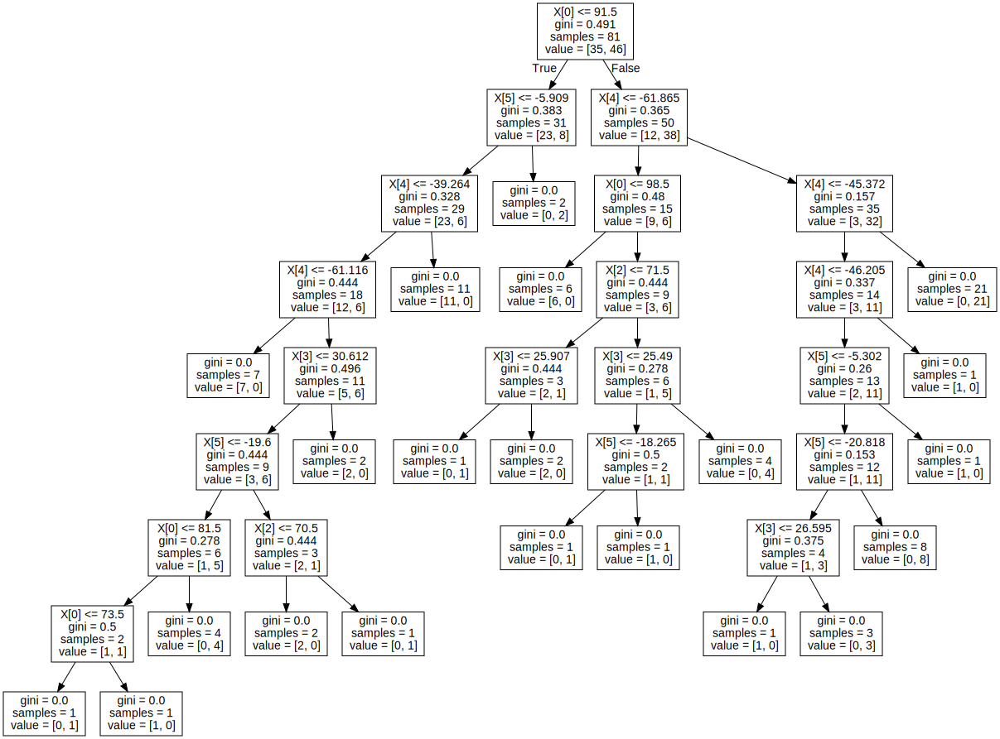
#Checking the performance of model on Actual Test data...
YT_Fhat = data_Fclf.predict(Xtest)
YT_Fhat
print('Model Accuracy Score on totally unseen data(Xtest) is:',accuracy_score(Ytest, YT_Fhat)*100,'%')
multilabel_confusion_matrix(Ytest , YT_Fhat)
Model Accuracy Score on totally unseen data(Xtest) is: 60.0 %
array([[[11, 7],
[ 7, 10]],
[[10, 7],
[ 7, 11]]])
#Testing for New points except from Dataset
Test_point = [[45.6,7.6,8.90,1.9,9.0,6.8],
[46.5,2.8,4.6,1.5,1.8,1.3],
[65.1,2.5,3.0,1.1,0.5,1.4],
[45.1,3.3,1.7,0.5,1.6,2.8],
[26.0,2.7,5.1,1.6,2.4,1.1],
[16.0,2.2,5.0,1.5,2.8,0.7]]
print(data_Fclf.predict(Test_point))
[2 2 2 2 2 2]
/usr/local/lib/python3.7/dist-packages/sklearn/base.py:451: UserWarning: X does not have valid feature names, but DecisionTreeClassifier was fitted with feature names
"X does not have valid feature names, but"